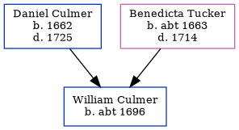

George Culmer
[ Home ] | [ Calendar ] | [ Surnames Index ] | [ Census Index ] | [ Family History ]The child of Daniel Culmer and Benedicta Tucker, George Culmer was the eight times great-uncle of Nigel Horne.
Parents
- Daniel was born in 1662
- Benedicta was born c. 1663
Family Tree
Generated by ged2site. Last updated on Jun 11, 2024